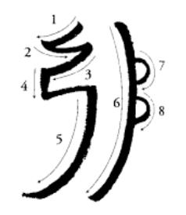

Su nombre se traduce como "Coloca el poder del universo aquí". Es una llave que canaliza y amplifica la energía, actuando como un interruptor de luz para potenciar el flujo de Reiki. Resuena con la energía de la Tierra y es ideal para energizar, purificar y anclar.
Usa el mouse o tu dedo para calcar el símbolo.
Recuerda: la intención es más importante que la perfección del trazo.
Observa el símbolo por 5 segundos, luego intenta dibujarlo de memoria.
¬°Memoriza!
¡Tu turno! Dibuja el símbolo como lo recuerdes.
No importa si el trazo no es perfecto, lo que cuenta es tu intención.
Enfoca tu mirada en el símbolo y respira profundamente.
Conecta con la energía del símbolo, no con la perfección de su imagen.
PoderPurificarAnclarAquí y Ahora
Cho Ku Rei en Resumen
Elemento: Tierra
Representa lo físico y la manifestación.
Polaridad: Femenina
Es energía receptiva y de anclaje.
Plano de Acción
Actúa sobre el cuerpo físico y lo material.
Verbos Clave
Potenciar, Purificar, Anclar, Proteger.
Sei He Ki (Sei-He-Ki)
"El Símbolo de la Armonía"
Su nombre se traduce como "Dios y Hombre se vuelven uno". Actúa como un puente entre el cielo y la tierra, armonizando los planos mental y emocional. Resuena con la energía de la Luna y es la llave para sanar el subconsciente, liberar bloqueos emocionales y calmar la mente.
Calca el símbolo para interiorizar su flujo y sus trazos.
Recuerda: la intención es más importante que la perfección del trazo.

Observa el símbolo por 5 segundos, luego intenta dibujarlo de memoria.
¬°Memoriza!
¡Tu turno! Dibuja el símbolo como lo recuerdes.
No importa si el trazo no es perfecto, lo que cuenta es tu intención.
Enfoca tu mirada en el símbolo y respira profundamente.
Conecta con la energía del símbolo, no con la perfección de su imagen.
ArmoníaSanaciónLiberaciónEquilibrio
Sei He Ki en Resumen
Elemento: Luna / Agua
Representa las emociones y el subconsciente.
Polaridad: Masculina
Es energía activa y de proyección.
Plano de Acción
Act√∫a sobre la mente y las emociones.
Verbos Clave
Armonizar, Sanar, Liberar, Equilibrar.
Hon Sha Ze Sho Nen
"El símbolo del vacío (sin tiempo ni espacio)"
Su nombre se puede interpretar como "La esencia verdadera de ser es la conciencia pura". Este es el símbolo que trasciende el tiempo y el espacio. Resuena con la energía del Sol, iluminando y sacando a la luz lo que necesita ser sanado. Es la llave para enviar Reiki a distancia, al pasado y al futuro, y para trabajar a nivel kármico y espiritual.
Este es un símbolo complejo. Tómate tu tiempo para calcarlo.
Recuerda: la intención es más importante que la perfección del trazo.
Observa el símbolo por 5 segundos, luego intenta dibujarlo de memoria.
¬°Memoriza!
¡Tu turno! Dibuja el símbolo como lo recuerdes.
No importa si el trazo no es perfecto, lo que cuenta es tu intención.
Enfoca tu mirada en el símbolo y respira profundamente.
Conecta con la energía del símbolo, no con la perfección de su imagen.